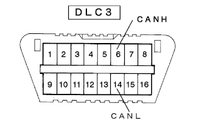
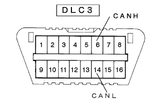
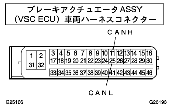
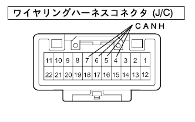
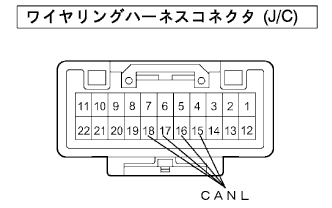

|  |
IGスイッチをOFFにして、DLC3の6(CANH)←→14(CANL)間の抵抗を測定する。
| Ａ | 108－132Ω |
| Ｂ | 132Ω以上 |
- ■ 注 意 ■
- 測定値が132Ω以上の時にCAN通信系ダイアグコードが出力している場合は、DLC3支線の断線以外にも不具合があると考えられるため、異常箇所を修正後、「トラブルシュートの進め方」(
 )から再度トラブルシュートを行う。
)から再度トラブルシュートを行う。
制御系CAN通信システム CANバス本線 断線点検(DLC3支線/本線/終端抵抗) |
| 症状 | 疑わしい箇所 |
|---|---|
| DLC3の6(CANH)14(CANL)間の抵抗が67Ω以上 |
|
| 手順1 | DLC3点検（ＣＡＮＨ-ＣＡＮＬ） |
|  |
IGスイッチをOFFにして、DLC3の6(CANH)←→14(CANL)間の抵抗を測定する。
| Ａ | 108－132Ω |
| Ｂ | 132Ω以上 |
)から再度トラブルシュートを行う。
|
| ||||
| A | |
| 手順2 | ダイアグコード読み取り |
出力しているダイアグコードを読み取る。
| Ａ | Ｕ0121/94(ABS)、Ｕ0123/62(VSC)、Ｕ0124/95(ABS)、Ｕ0126/63(VSC)が同時出力している |
| Ｂ | CAN通信系ダイアグコードはＵ0126/63(VSC)のみ出力している |
|
| ||||
| A | |
| 手順3 | CANバス断線点検（ＣＡＮバス本線（ＶＳＣ ＥＣＵ-Ｊ／Ｃ）） |
|  |
ブレーキアクチュエータASSY(VSC ECU)のコネクタをブレーキアクチュエータASSY(VSC ECU)から切り離す。
ブレーキアクチュエータASSY(VSC ECU)車両ハーネスコネクタの11(CANH)←→25(CANL)間の抵抗を測定する。
|
| ||||
| NG | |
| 手順4 | ワイヤリングハーネスコネクタ(J/C)単体点検（ＣＡＮＨ-ＣＡＮＨ） |
|  |
ワイヤリングハーネスコネクタ(J/C)を車両ハーネスから切り離す。
ワイヤリングハーネスコネクタ(J/C)の4(CANH)←→5(CANH)、4(CANH)←→6(CANH)、4(CANH)←→7(CANH)間の抵抗を測定する。
|
| ||||
| OK | |
| 手順5 | ワイヤリングハーネスコネクタ(J/C)単体点検（ＣＡＮＬ-ＣＡＮＬ） |
|  |
ワイヤリングハーネスコネクタ(J/C)の15(CANL)←→16(CANL)、15(CANL)←→17(CANL)、15(CANL)←→18(CANL)間の抵抗を測定する。
|
| ||||
| OK | ||
| ||
| 手順6 | CANバス断線点検（ＣＡＮバス本線（舵角センサ-Ｊ／Ｃ）） |
 |
IGスイッチをOFFにして、ステアリングセンサ(舵角センサ)のコネクタをステアリングセンサ(舵角センサ)から切り離す。
ステアリングセンサ(舵角センサ)の車両ハーネスコネクタの1(CANH)←→6(CANL)の抵抗を測定する。
|
| ||||
| NG | |
| 手順7 | ワイヤリングハーネスコネクタ(J/C)単体点検（ＣＡＮＨ-ＣＡＮＨ） |
ワイヤリングハーネスコネクタ(J/C)を車両ハーネスから切り離す。
ワイヤリングハーネスコネクタ(J/C)の5(CANH)←→4(CANH)、5(CANH)←→6(CANH)、5(CANH)←→7(CANH)間の抵抗を測定する。
|
| ||||
| OK | |
| 手順8 | ワイヤリングハーネスコネクタ(J/C)単体点検（ＣＡＮＬ-ＣＡＮＬ） |
ワイヤリングハーネスコネクタ(J/C)の16(CANL)←→15(CANL)、16(CANL)←→17(CANL)、16(CANL)←→18(CANL)間の抵抗を測定する。
|
| ||||
| OK | ||
| ||